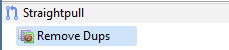
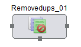

Hydrograph Help
Hydrograph Help
Remove Dups
Hydrograph Release Version 1.0
Remove Dups is used to remove duplicates from an input source. It is present under the Straight Pull category in the component palette since no transformations are performed on the incoming data.
Remove Dups, removes duplicate records based on a key field and transmits the output through a single out port. Duplicate records are transmitted through a single unused port.
The Remove Dups component can be easily distinguished in the component palette.

An enlarged version of the same is depicted when dragged on the canvas.

For further reference click on the links below: